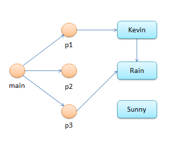
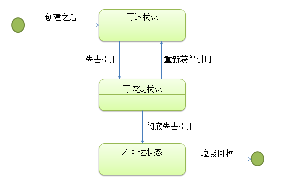
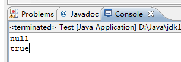
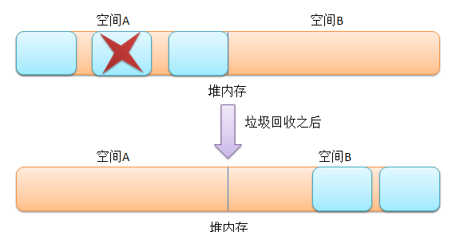
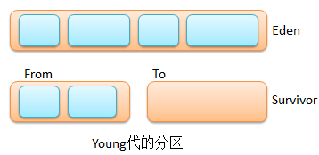
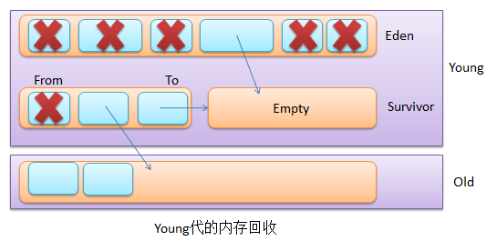

虚拟机内存
内存区域

Java堆（Java Heap）
-Xms20m -Xmx20m -XX:+HeapDumpOnOutOfMemoryError
运行该命令通知JVM拍摄一个“堆转储快照”，并将其保存在一个文件中以便处理，通常使用
jhat工具。您可以使用相应的-XX:HeapDumpPath标志指定到保存文件的实际路径。
-XX:+HeapDumpOnCtrlBreak参数在Control + Break时产生转储文件。
虚拟机栈（JVM Statck）
HotSpot模拟机中-Xoss没有用的，栈容量由-Xss设定。
本地方法栈（Native Statck）
基本同上。
方法区（Method Area）
设置大小：-XX:PermSize和-XX:MaxPermSize
不对类进行回收：-Xnoclassgc
查看类加载与卸载信息：-=verbose:class、-XX:+TraceClassLoading、
-XX:+TraceClassUnLoading
-=verbose:class、-XX:+TraceClassLoading可以在Product版JVM中使用。
-XX:+TraceClassUnLoading只能在fastdebug版中使用。
常量池（Runtime Constant Pool）
直接内存区（Direct Memory）
-XX:MaxDirectMemorySize默认和-Xmx的一样。
GC与内存分配策略
Java在内存中的状态
首先我们先写一个代码为例子：
package test;
import java.io.Serializable;
public class Person implements Serializable {
static final long serialVersionUID = 1L;
String name; // 姓名
Person friend; //朋友
public Person() {}
public Person(String name) {
super();
this.name = name;
}
}
package test;
public class Test{
public static void main(String[] args) {
Person p1 = new Person("Kevin");
Person p2 = new Person("Rain");
Person p3 = new Person("Sunny");
p1.friend = p2;
p3 = p2;
p2 = null;
}
}
把上面Test.java中main方面里面的对象引用画成一个从main方法开始的对象引用图
的话就是这样的（顶点是对象和引用，有向边是引用关系）：

Java的内存回收机制
当程序运行起来之后，把它在内存中的状态看成是有向图后，可以分为三种：
1）可达状态：在一个对象创建后，有一个以上的引用变量引用它。在有向图中可以从起始 顶点导航到该对象，那它就处于可达状态。
2）可恢复状态：如果程序中某个对象不再有任何的引用变量引用它，它将先进入可恢复
状态，此时从有向图的起始顶点不能再导航到该对象。在这个状态下，系统的垃圾回收机制
准备回收该对象的所占用的内存，在回收之前，系统会调用finalize()方法进行资源清理
，如果资源整理后重新让一个以上引用变量引用该对象，则这个对象会再次变为可达状态；
否则就会进入不可达状态。
3）不可达状态：当对象的所有关联都被切断，且系统调用finalize()方法进行资源清理
后依旧没有使该对象变为可达状态，则这个对象将永久性失去引用并且变成不可达状态，
系统才会真正的去回收该对象所占用的资源。
上述三种状态的转换图如下：

Java对对象的4种引用
1）强引用 ：创建一个对象并把这个对象直接赋给一个变量，eg ：
Person person = new Person(“sunny”);不管系统资源有么的紧张，强引用的对象都绝对
不会被回收，即使他以后不会再用到。
2）软引用 ：通过SoftReference类实现，eg :
SoftReference<Person> p = new SoftReference<Person>(new Person(“Rain”));内存
非常紧张的时候会被回收，其他时候不会被回收，所以在使用之前要判断是否为null从而
判断他是否已经被回收了。
3）弱引用 ：通过WeakReference类实现，eg :
WeakReference<Person> p = new WeakReference<Person>(new Person(“Rain”));不管
内存是否足够，系统垃圾回收时必定会回收。
4）虚引用 ：不能单独使用，主要是用于追踪对象被垃圾回收的状态。通过
PhantomReference类和引用队列ReferenceQueue类联合使用实现，eg ：
package test;
import java.lang.ref.PhantomReference;
import java.lang.ref.ReferenceQueue;
public class Test{
public static void main(String[] args) {
//创建一个对象
Person person = new Person("Sunny");
//创建一个引用队列
ReferenceQueue<Person> rq = new ReferenceQueue<Person>();
//创建一个虚引用，让此虚引用引用到person对象
PhantomReference<Person> pr = new PhantomReference<Person>(person, rq);
//切断person引用变量和对象的引用
person = null;
//试图取出虚引用所引用的对象
//发现程序并不能通过虚引用访问被引用对象，所以此处输出为null
System.out.println(pr.get());
//强制垃圾回收
System.gc();
System.runFinalization();
//因为一旦虚引用中的对象被回收后，该虚引用就会进入引用队列中
//所以用队列中最先进入队列中引用与pr进行比较，输出true
System.out.println(rq.poll() == pr);
}
}
运行结果：

Java垃圾回收机制
其实Java垃圾回收主要做的是两件事：1）内存回收 2）碎片整理
垃圾回收算法
串行回收和并行回收
串行回收是不管系统有多少个CPU，始终只用一个CPU来执行垃圾回收操作，而并行回收就是 把整个回收工作拆分成多个部分，每个部分由一个CPU负责，从而让多个CPU并行回收。并行 回收的执行效率很高，但复杂度增加，另外也有一些副作用，如内存随便增加。
并发执行和应用程序停止
应用程序停止（Stop-the-world）顾名思义，其垃圾回收 方式在执行垃圾回收的同时会导致应用程序的暂停。并发执行的垃圾回收虽然不会导致应用 程序的暂停，但由于并发执行垃圾需要解决和应用程序的执行冲突（应用程序可能在垃圾 回收的过程修改对象），因此并发执行垃圾回收的系统开销比Stop-the-world高，而且执行 时需要更多的堆内存。
压缩和不压缩和复制
支持压缩的垃圾回收器（标记-压缩 = 标记清除+压缩）会把所有的可达对象搬迁到一起， 然后将之前占用的内存全部回收，减少了内存碎片。
不压缩的垃圾回收器（标记-清除）要遍历两次，第一次先从跟开始访问所有可达对象， 并将他们标记为可达状态，第二次便利整个内存区域，对未标记可达状态的对象进行回收 处理。这种回收方式不压缩，不需要额外内存，但要两次遍历，会产生碎片
复制式的垃圾回收器：将堆内存分成两个相同空间，从根（类似于前面的有向图起始顶点 ）开始访问每一个关联的可达对象，将空间A的全部可达对象复制到空间B，然后一次性回 收空间A。对于该算法而言，因为只需访问所有的可达对象，将所有的可达对象复制走之后 就直接回收整个空间，完全不用理会不可达对象，所以遍历空间的成本较小，但需要巨大的 复制成本和较多的内存。

堆内存的分代回收
分代回收的依据
对象生存时间的长短：大部分对象在Young期间就被回收
不同代采取不同的垃圾回收策略：新（生存时间短）老（生存时间长）对象之间很少存在 引用
堆内存的分代
Young代
回收机制：因为对象数量少，所以采用复制回收。
组成区域：由1个Eden区和2个Survivor区构成，同一时间的两个Survivor区，一个
用来保存对象，另一个是空的；每次进行Young代垃圾回收的时候，就把Eden，From
中的可达对象复制到To区域中，一些生存时间长的就复制到了老年代，接着清除Eden，
From空间，最后原来的To空间变为From空间，原来的From空间变为To空间。
对象来源：绝大多数对象先分配到Eden区，一些大的对象会直接被分配到Old代中。
回收频率：因为Young代对象大部分很快进入不可达状态，因此回收频率高且回收速度快


Old代
回收机制：采用标记压缩算法回收。
对象来源：
- 对象大直接进入老年代。
- Young代中生存时间长的可达对象
回收频率：因为很少对象会死掉，所以执行频率不高，而且需要较长时间来完成。
Permanent
用途：用来装载Class，方法等信息，默认为64M，不会被回收
对象来源：对于像Hibernate，Spring这类喜欢AOP动态生成类的框架，往往会生成大量的
动态代理类，因此需要更多的Permanent代内存。所以我们经常在调试Hibernate，Spring的
时候经常遇到java.lang.OutOfMemoryError:PermGen space的错误，这就是Permanent
代内存耗尽所导致的错误。
回收频率：不会被回收
常见的垃圾回收器
串行回收器（只使用一个CPU）
Young代采用串行复制算法；Old代使用串行标记压缩算法（三个阶段：标记mark、 清除sweep、压缩compact），回收期间程序会产生暂停，
并行回收器
对Young代采用的算法和串行回收器一样，只是增加了多CPU并行处理；对Old代的处理和 串行回收器完全一样，依旧是单线程。
并行压缩回收器
对Young代处理采用与并行回收器完全一样的算法；只是对Old代采用了不同的算法，其实 就是划分不同的区域，然后进行标记压缩算法：
① 将Old代划分成几个固定区域；
② mark阶段（多线程并行），标记可达对象；
③ summary阶段（串行执行），从最左边开始检验知道找到某个达到数值（可达对象密度小 ）的区域时，此区域及其右边区域进行压缩回收，其左端为密集区域
④ compact阶段（多线程并行），识别出需要装填的区域，多线程并行的把数据复制到这些 区域中。经此过程后，Old代一端密集存在大量活动对象，另一端则存在大块空间。
并发标识—清理回收（CMS）
对Young代处理采用与并行回收器完全一样的算法；只是对Old代采用了不同的算法，但 归根结地还是标记清理算法：
① 初始标识（程序暂停）：标记被直接引用的对象(一级对象)；
② 并发标识（程序运行）：通过一级对象寻找其他可达对象；
③ 再标记（程序暂停）：多线程并行的重新标记之前可能因为并发而漏掉的对象（简单的说 就是防遗漏）
④ 并发清理（程序运行）
内存管理小技巧
-
尽量使用直接量，eg：
String javaStr = “小学徒的成长历程”; -
使用
StringBuilder和StringBuffer进行字符串连接等操作; - 尽早释放无用对象;
- 尽量少使用静态变量;
- 缓存常用的对象:可以使用开源的开源缓存实现，eg：OSCache，Ehcache;
-
尽量不使用
finalize()方法; -
在必要的时候可以考虑使用软引用
SoftReference。
基本设置
收集器日志：-XX:+PrintGCDetails
跨代码快速运行grep，就会发现清单1所示的问题—原始Java性能反模式如手动调用GC:
System.gc();
显式垃圾收集是一个非常糟糕的主意——就像将您和一个疯狂的斗牛犬锁在一个电话亭里。
尽管调用的语法是依赖实现的，但如果您的JVM正在运行一个分代的垃圾回收器（大多数是
）System.gc();强迫VM执行一个堆的“全部清扫”，虽然有的没有必要。全部清扫比一个
常规GC操作要昂贵好几个数量级，这只是个简单数学问题。
Sun的工程师为这个特殊的人工错误提供一个JVM标志：-XX:+DisableExplicitGC。自动将
System.gc()调用转换成一个空操作，提供运行代码的机会。您自己看看System.gc()
对于整个JVM执行有害还是有利。
回收算法
新生代
新生代大小：-Xmn10M
新生代中Eden与Survivor比例，默认8比1：-XX:SurvivorRatio=8
老年代
设置大对象直接放老年代：-XX:PretenureSizeThreshold=3145728单位是B不能用M。
每活过一次GC的对象年龄加一岁。默认一岁放在Servivor里，15岁放到老年代：
-XX:MaxTenuringThreshold=15。但即使不到年龄，如果相同年龄的占空间大小点到了
Survivor的一半，也入老年代。
空间分配担保
防止分配担保失败时过多调用Full GC：-XX:+HandlePromotionFailure
垃圾收集器种类
新生代收集器
Serial
Client模式下默认收集器。开关：UseSerialGC
ParNew
Serial多线程版本-XX:+UseParNewGC。
CMS收集器（Concurrent Mark Sweep）作为老年代收集器，不能用Parallel Scavenge配合 。所以这种情况下只能用ParNew或Serial。
要用-XX:+UseConcMarkSweepGC选项让ParNew配CMS，当CMS抛Concurrent Mode Failure
失败后换Serial Old新生代收集器。
Parallel Scavenge
吞吐量优先更加高效。
控制收集停顿时间：-XX:MaxGCPauseMillis；
设置时间比(1/(1+值))：-XX:GCTimeRatio。默认值99，即(1/(1+99))等于1%。
策略参数-XX:+UseAdaptiveSizePolicy，设以后不用手工设置新生代大小-Xmm、Eden与
Survivor区的比例-XX:PretenureSizeThreshold等细节。
老年代收集器
Serial Old
单线程，Client模式下使用。
CMS
默认在老年代使用了70%后触发。设置触发百分比：
-XX:CMSInitiatingOccupancyFraction
由于算法基于标记回收产生碎片较多，-XX:+UseCMSCompactAtFullCollection在Full GC
后整理碎片。
G1收集器
收集器参数
| UseSerialGC | Client模式默认，Serial与Serial Old组合 |
| UseParNewGC | ParNew与Serial Old组合 |
| UseConcMarkSweepGC | ParNew配CMS，当CMS抛并发模式异常换Serial Old |
| UseParallelGC | Sever模式默认，Parallel Scavenge与Serial Old组合 |
| UseParallelOldGC | 使用Parallel Scavenge与Parallel Old组合 |
| SurvivorRatio |
Eden与Survivor容量比，默认8比1
|
| PretenureSizeThreshold | 多大的对象直接入老年代 |
| MaxTenuringThreshold | 进入老年代的年龄 |
| UseAdaptiveSizePolicy | 动态调整Java堆中各区域大小及进入老年代的年龄 |
| HandlePromotionFailure | 分配担保失败，老年代放不下Eden和Survivor的情况 |
| ParallelGCThreads | 并行GC时内存回收的线程数 |
| GCTimeRatio | GC占有时间比 |
Parallel Scavenge
| MaxGCPauseMillis | GC最大停顿时间 |
CMS收集器参数
| CMSInitiatingOccupancyFraction | 老年代使用多少次后触发GC |
| UseCMSCompactAtFullCollection | 是否在完成GC后整理内存 |
| CMSFullGCsBeforeCompaction | 进行若干次GC后再内存整理一次 |